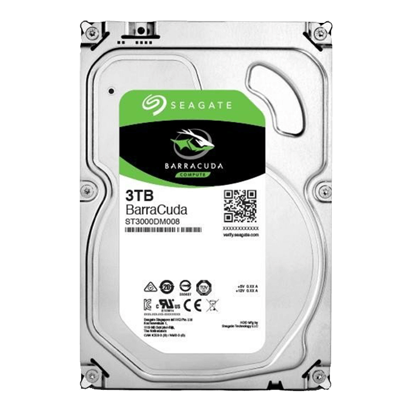
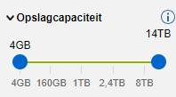

HDD kiezen
Kenmerken
De HDD, of Harde schijf, is de bulkopslag van je computer, dus hierop zullen al je programma's, foto's, films, enzovoorts komen. Dus niet je besturingssysteem. Een HDD is een schijfje en een lasertje dat al je gegevens op kan slaan, vaak is het redelijk groot en dik.
Filters
Qua HDD's heb je natuurlijk GB zoals je wel weet van je telefoon, maar meestal staat er op een HDD minstens 1000 GB of 1 TB (terabyte), als je minder dan dit neemt is het eigenlijk te weinig, dus zet maar minimaal 1 TB tussen je filters. Dan heb je nog MBps, dit is de snelheid, want 1 MB is 0,001 GB, en ps staat voor per seconden, dus het aantal MBps is het aantal MB's dat je schijf per seconde kan verwerken. De meeste HDD’s hebben ongeveer 200 MBps, dus stel dat ook maar als minimum in bij je filters.
Merken
De bekendste en beste merken van HDD's zijn WD (Western Digital) en Seagate Barracuda. Seagate Barracuda is meestal ongeveer dezelfde snelheid en heeft altijd heel veel jaren garantie. Maar WD daartegenover heeft veel verschillende snelheden, die noemen ze in kleuren, ik ga dat niet helemaal uitleggen, maar het beste is om WD Blue te nemen aangezien dat gewoon goed tussen snel en langzaam in zit.
Dit was Stap 7 van Deel 1, je kunt nu doorgaan naar de volgende stap.